Interpretable Deep Learning for Fundamental Physics
From Supernovae detection to Neutrinos passing by Parton Distribution Functions.

Research Focus: interpretability in Deep Learning
Deep Learning models are black boxes
Extremely dense set of methods.
How to do interpretability in Fundamental Physics?
Large set of methods for interpretability and explainability, but mostly non-trivial to transfer.
Reasons?
Type of data, type of problem, type of scientific downstream application, (???)
Targets?
- Reliable and calibrated uncertainties.
- Global behavior analysis and explanations.
- Identification of breaking points in models.
- ???
Interpretable Deep Learning for Real/Bogus classification with Uncertainty Quantification
Raphaël Bonnet-Guerrini1, Dominique Fouchez2, Vincenzo Piuri1, Benjamin Racine2, and Bruno Sanchez21Computer Science Department, University of Milan; 2Centre de Physique des Particules de Marseille
Under review for Astronomy&Astrophysics journal.

Cosmology: a data driven era
- Calibrate the image
- Find all differences (~10k/image)
-
For each difference
- Perform photometry
- Crossmatch with known catalogs
- Find nearest Solar System objects
- Compute various features
- Find past LSST detections at this location
- Package into an alert
Difference Image analysis

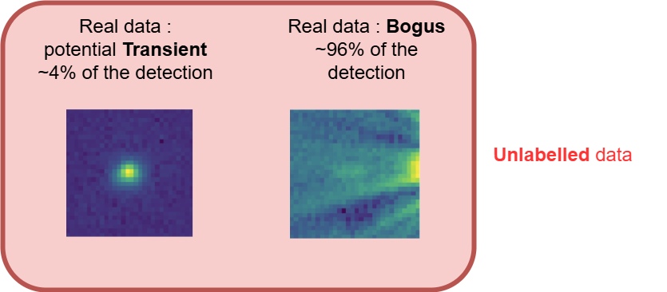
Weakly supervised learning problem
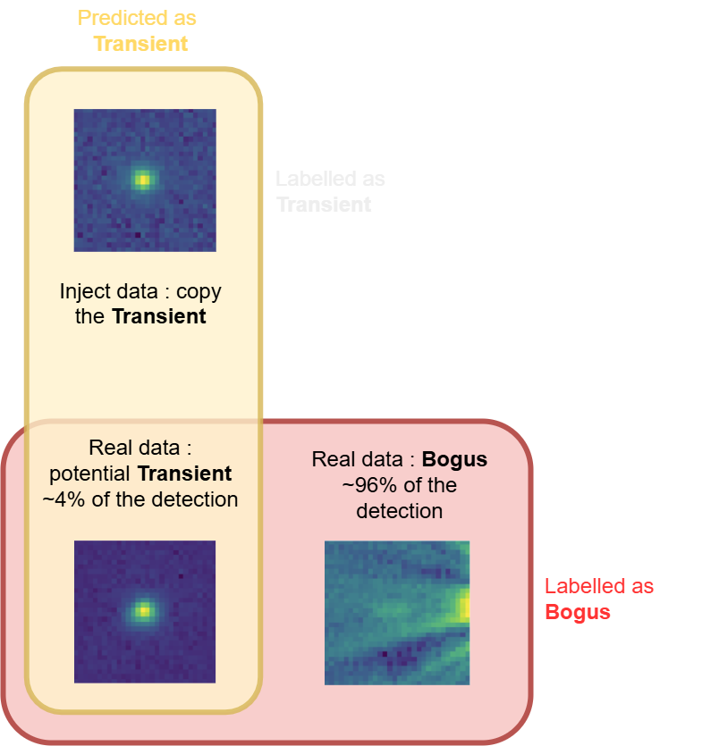
Training Data Presentation
The HSC RC2 subset is composed of 6 detectors, with 8 visits per filter.Producing the Cutouts:
Classes and Labels:

Evaluation Data Presentation
Filtering steps: from 8M to 342 LCs
Human labeling:
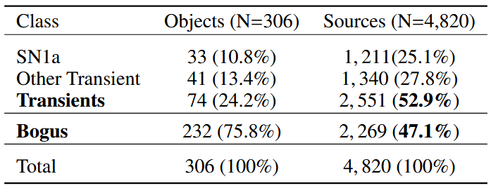
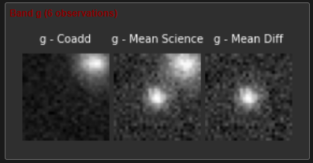
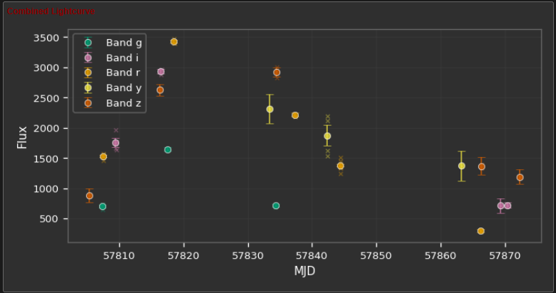
Network Architecture
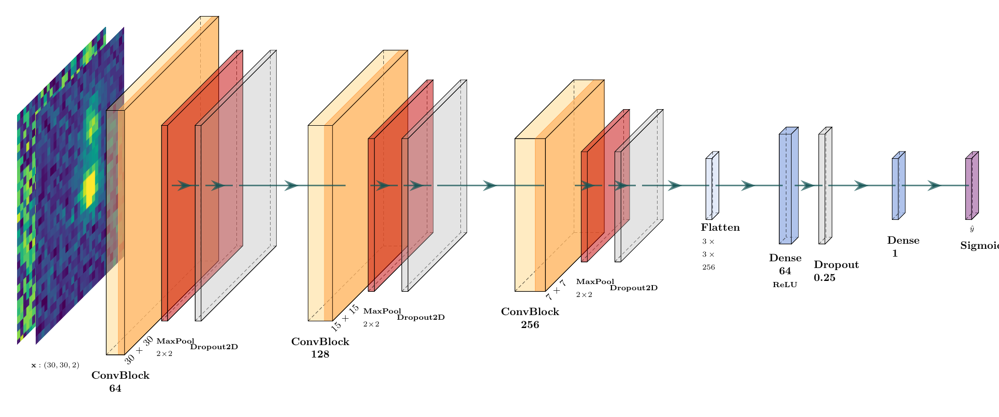
Co-Teaching: A Self-Event-Selection Strategy for Weakly Supervised Learning
Two models are trained simultaneously with different views on the same dataset.

In each batch, each model selects the datum with the smallest loss (most confident predictions).
Avoid training on the wrong labels.
Pros:
- Effective for noisy datasets.
Cons:
- Increases computational cost.
- Assumes symmetrical noise.
Asymmetrical Co-Teaching
Two models are trained simultaneously with different views on the same dataset.

Key Changes:
- Implements different remembering rates for each class.
- Better fits the needs of our asymmetrically weakly supervised dataset.
WSL analysis
DIA Calibration is expected to improve across time and survey conditions.
Four different training sets with varying noise levels.
Our method outperforms standard training, especially in the most noisy setting.
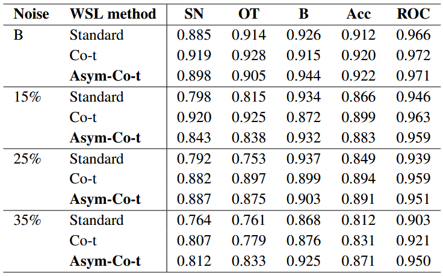
Ensembles and MC Dropout
Ensembles:
- Train multiple models with different initializations.
- Average predictions to reduce variance and improve robustness.
- Cost: T trainings and T inferences.
MC Dropout:
- Apply dropout during inference to simulate an ensemble of models.
- Perform multiple forward passes to estimate uncertainty.
- Cost: T inferences.
Predictive uncertainty (from variance of predictions):
\[ \hat{\mu}(x)=\frac{1}{T}\sum_{t=1}^{T}p_t(x), \qquad \widehat{\mathrm{Var}}(x)=\frac{1}{T-1}\sum_{t=1}^{T}\left(p_t(x)-\hat{\mu}(x)\right)^{2} \]
where \( p_t(x)=\begin{cases} \sigma(f_t(\mathbf{x}, \hat\theta_t)), & \text{for ensemble}\\ \sigma(f_t(\mathbf{x}, \hat\theta, z_t)), & \text{for MC Dropout} \end{cases} \)
UQ for Co-Teaching
Co-Teaching methods train two models simultaneously. Let's use them as an ensemble.
\( N=2\) ensemble is small, we can extend it by performing M stochastic forward passes with MC Dropout for each model, resulting in a total of \(N\times M\) predictions.
Metrics for Uncertainty Quantification
Calibration Metrics:
- Negative Log-Likelihood (NLL): quality of probabilistic predictions.
- Brier Score: MSE of probabilistic predictions.
- Expected Calibration Error (ECE): difference between predicted probabilities and observed frequencies.
Correlations with Physical Quantities:
- Correlations with Signal-to-Noise Ratio (SNR).
- Correlations with maximum brightness of a SNIa.
\[ \rho = 1 - \frac{6 \sum d_i^2}{n(n^2 - 1)} \]
UQ analysis


Using UMAP for NN Latent Space visualization
UMAP Overview:
- Preserves both local and global structure using non-linear dimensionality reduction.
- Builds a nearest-neighbors graph and optimizes it for lower dimensions.

UMAP in our case:
Applied to the projection of inputs in the latent space of the network.UMAP Results
UMAP Results: SNR overlay
UMAP Results: UQ overlay
Outcomes of the project
- New Asym-Co-Teaching methods that allow mitigation of the risk in a high-stakes class.
- Novel uncertainty quantification method for Co-Teaching, providing better-calibrated uncertainties at lower cost.
- UMAP visualization of the latent space confirms our interpretation of global model behavior.
- Further exploration of the latent space to identify specific features or patterns associated with the bogus class.
- Expanding this work to upcoming datasets.
- Exploration of the systematic performance of MC–ensemble mixtures.
Multiclass Classification without Labels via Posterior Simplex Geometry
Raphaël Bonnet-Guerrini1, Johann Ioannou-Nikolaides2, Troels Petersen2, and Vincenzo Piuri1Submitted to NeurIps 2026 maintrack
1Computer Science Department, University of Milan;2Niels Bohr Institute, University of Copenhagen
CWoLa: Classification Without Labels
Binary theorem: given two mixtures \(M_1\), \(M_2\) of pure samples \(S\) and \(B\) with signal fractions \(f_1 > f_2\), the optimal classifier separating \(M_1\) from \(M_2\) is also optimal for separating \(S\) from \(B\).
\[ L_{M_1/M_2}=\frac{f_1p_S+(1-f_1)p_B}{f_2p_S+(1-f_2)p_B}=\frac{f_1L_{S/B}+(1-f_1)}{f_2L_{S/B}+(1-f_2)} \]
If \(f_1 > f_2\), \(L_{S/B}\) and \(L_{M_1/M_2}\) define the same classifier — no labels, no proportions.
A well-established method in particle physics

Anomaly detection
model-agnostic resonance / new-physics searches
Classification from impure samples
quark/gluon and jet tagging
360+ citations, including 270 in HEP Always the binary case: signal vs background. The guarantee does not extend to \(K>2\).
Why binary CWoLa breaks for \(K>2\)
- Binary CWoLa gives only a one-dimensional ordering — not a \(K\)-class representation.
- One-vs-rest works, but needs \(M-1\) separate classifiers — expensive and unstable.
Our move: train one \(M\)-way classifier to predict mixture identity, and read the latent classes off its posterior geometry.
The setup: \(K\) classes, \(M\) mixtures
Each mixture \(m\) has density built from shared class-conditionals \(p_k\) and unknown weights \(\pi_{mk}\):
We observe only the data \(x\) and the mixture id \(m\) — never the latent label \(y\), never the mixing matrix \(\Pi\).
The simplex intuition
Trained only on mixture id, the posterior cloud organizes on a \((K-1)\)-simplex inside \(\Delta^{M-1}\) — its vertices are the latent classes.
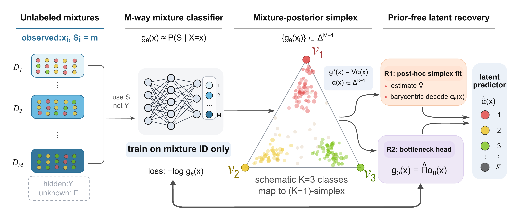
Two prior-free recoveries
(R1) Post-hoc simplex fitting
- Train the \(M\)-way classifier.
- Vertex-hunt the posterior cloud \(\to \hat V\).
- Decode each point by barycentric coordinates.
(R2) Architectural bottleneck
- Factor \(g_\theta(x)=\hat\Pi\,\alpha_\theta(x)\).
- Simplex enforced during training.
- Strong inductive bias for weak trunks.
Assumptions: shared class-conditionals, full-rank \(\Pi\) (\(M\ge K\)), separability (anchors), uniform mixture sampling. Both also recover the hidden mixing matrix \(\Pi\).
The geometry is really there
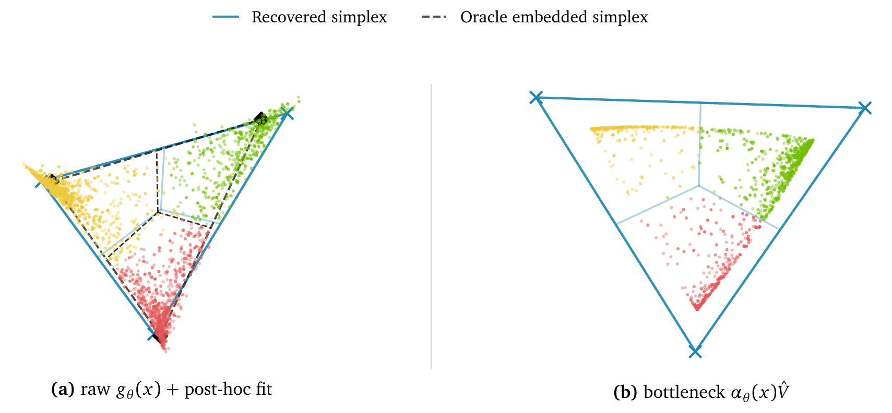
CIFAR-10, \(K=3\), \(M=6\): trained only on mixture id, yet points cluster at vertices that match the oracle classes — via post-hoc fit (a) or bottleneck (b).
More mixtures → better recovery
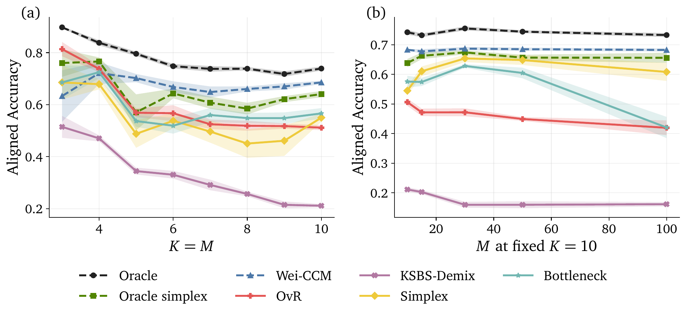
CIFAR-10. At fixed \(K=10\), extra mixtures add redundant constraints: simplex rises \(0.55\,(M{=}10)\to{\sim}0.65\,(M{=}30,50)\), nearly matching the known-prior oracle.
Real data: Galaxy10 DECaLS

Real telescope images, \(K=M=10\). As mixture purity drops the problem becomes unidentifiable — but our methods degrade gracefully and track the oracle-prior baselines at moderate/high purity.
Strongest prior-free method
| Technique | Method | Accuracy ↑ | ECE ↓ |
|---|---|---|---|
| Supervised | Oracle | 0.802 | 0.032 |
| Prior-aware | Wei CCM | 0.686 | 0.069 |
| Oracle Simplex | 0.661 | 0.116 | |
| Prior-free | OvR | 0.476 | 0.272 |
| Bottleneck | 0.503 | 0.197 | |
| Simplex | 0.584 | 0.123 |
Galaxy10, \(K=10,M=20\). Simplex beats OvR by +10.8 accuracy points and halves calibration error — closing most of the gap to oracle-prior methods.
You don't even need to know \(K\)

\(K\) enters only the post-hoc fitter, so it is discoverable: a held-out reconstruction error plus a gap statistic recover \(K_{\text{true}}=10\) on Galaxy10.
Conclusion
Mixture identity alone recovers multiclass structure — no labels, no priors.
- The mixture posterior is a \((K-1)\)-simplex; its vertices give both the classes and the hidden mixing matrix.
- Purity and anchors still matter — recovery degrades gracefully, not silently.
- Model-agnostic → scalable to label-scarce science.
Shapley values meet NNPDF
Raphaël Bonnet-Guerrini1, Stefano Carrazza2, Dakshansh Chawda2, Stefano Forte2, Eva Groenendijk2, Vincenzo Piuri1, and Ramon Winterhalder21Computer Science Department, University of Milan;
2TIF lab, Physics Department, University of Milan
Submitted to EPJ-C
Why do we need Parton Distribution Functions (PDFs)?
LHC collides protons, but the hard interaction occurs between their fundamental constituents, the partons.
Partons are not directly observed: the detector only sees final-state particles.
PDFs are the latent probability model we infer.
A proton is composed of quarks and gluons, whose momentum distribution is described by PDFs.
Parton Distribution Functions (PDFs) and NNPDF
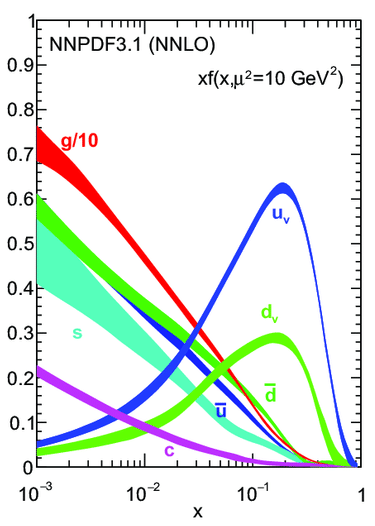
- Describe the probability of finding a parton carrying a fraction \(x\) of the proton's momentum at a given energy scale \(Q^2\).
- Predicts outcomes of particle collisions.
- NNPDF uses NN to model PDFs without assuming a specific functional form.
- Trained on data from different experiments.
PDF fitting: an inverse problem
NNPDF solves an inverse problem: we have a set of experimental data and we want to find the underlying PDFs that best explain the data.

Theory (QCD, QED) allows us to compute the observable values \(\mathcal{O}_n\) from the PDF space, and the inverse is done by fitting precise experimental data.
What data enter the global fit?

Kinematic coverage of the NNPDF dataset in the \((x,Q^2)\) plane.
Diverse processes:
DIS, Drell-Yan, jets, top, photons...
Uneven coverage:
dense data islands, sparse regions.
Critical regions:
important predictions can rely on indirect constraints.
PDF space
The PDF space is a 8-dimensional space (flavor basis or evolution basis).
Why does a given flavor look like this in a given \(x\) region? Which datasets are responsible for this behavior?

Makes it difficult to perform systematic tests and obtain a clear understanding of each flavor on the fit.
NNPDF a black box model ?
Black-box systems are a recurrent interpretability issue in modern DL. We can take inspiration from the methods developed there to solve the interpretability problem of NNPDF.
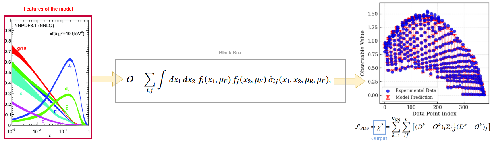
XAI answer : What's the impact of one feature on the output of the model ?
Shapley Values
Inherited from game theory: represent the value of the contribution \(\phi\) of a player \(i\) within a coalition \(S\).
\[ \phi_i = \sum_{S \subseteq N \setminus \{i\}} \frac{|S|! \, (|N| - |S| - 1)!}{|N|!} \left[ v(S \cup \{i\}) - v(S) \right] \]where \(N\) is the set of all players, \(S\) is a subset of players not including \(i\), and \(v(S)\) is the value of the coalition \(S\).
Computational cost scales exponentially with the number of players \(2^N\).
SHAP adapts SV for DL application. Makes them computable for large numbers of players (features) given certain assumptions and approximations.
Applying Shapley values to NNPDF
Applying Shapley Values to NNPDF, we treat the PDF of each flavor as an input of our black-box model.

- \(\phi_i\) is the Shapley Value for flavor \(i\).
- \(N\) is the total number of flavors.
- \(S\) is a subset of flavors not including \(i\).
- \(v(S)=\chi^2\) is the value of the coalition when all flavors in coalition \(S\) are perturbed, while \(i\) and the rest of the flavors remain untouched.
SHAP in particle physics
Standard SHAP makes Shapley values tractable for ~50+ features by assuming features are independent (additivity).
But PDF flavors are strongly correlated → the independence assumption breaks.
Only 8 players (PDF flavors) → the Shapley sum for each flavor runs over just \(2^7=128\) coalitions → we compute the exact Shapley value: no independence assumption, all correlations kept.
Perturbing a PDF: a calibrated bump

Gaussian bump averaged over both directions
We probe one flavor in a chosen \(x\) region with a smooth Gaussian bump, its height calibrated to the PDF uncertainty so it is comparable across flavors.
To avoid directional bias, we average the value over the \(+\) and \(-\) bumps:
Coalitions, and where correlations come from
A coalition \(S\): perturb the flavors in \(S\), leave the rest untouched; \(v(S)=\chi^2\).
Correlations are physical: sum rules tie flavors together, perturbing one forces compensating shifts in the others, so total proton momentum and quark counting stay fixed.
How to read a Shapley value
\(\phi_j\) = marginal change in \(\chi^2\) when flavor \(j\) is perturbed, same units as \(\chi^2\).
Always per dataset \(\mathcal{D}\):
different data → different contributions.

- \(\phi_j > 0 \): \(\mathcal{D}\) constrains flavor \(j\)
- \(\phi_j \approx 0 \): \(\mathcal{D}\) insensitive to \(j\)
- \(\phi_j < 0 \): baseline locally suboptimal (a pull in the fit)
The Shapley analysis in NNPDF
Loading trained PDFs from n3fit.

For selected datasets, we can run the following Shapley analysis:
- All possible coalitions of perturbed PDFs are being created.
- We compute the \(\chi^2\) for each coalition.
- For each single flavor, we compare the \(\chi^2\) of the coalition, with the flavor perturbed and not perturbed.
Probing any kinematic region
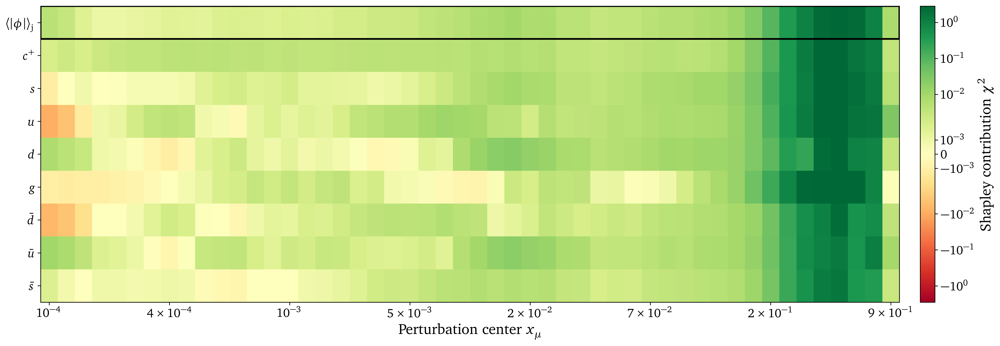
Slide the bump across \(x\): the tool isolates which flavor each \(x\)-region constrains, independently. Sensitivity tracks the data and fades where there is none.
Shapley uncertainty using PDF replicas

Running over PDF replicas gives an uncertainty on every contribution, not just a point estimate.
Per dataset constrains

Allow per-dataset analysis. Which allows to directly trace and quantify the dataset-flavor; jets and \(t\bar t\) are clearly gluon-driven around \(x\approx0.5\).
The surprising gluon dip
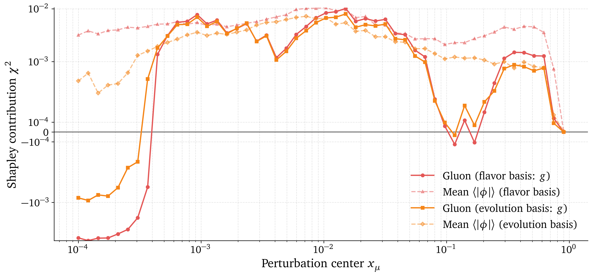
The tool flags a counter-intuitive gap near \(x\approx0.1\); the cause is a known QCD feature: there the gluon's evolution stalls (its kernel passes through zero), so the data cannot constrain it → \(\phi_g\approx0\).
Quantitative fold design
NNPDF tunes its hyperparameters with \(K\)-fold cross-validation: the data are split into folds. For that to be unbiased, each fold should constrain the PDFs similarly.
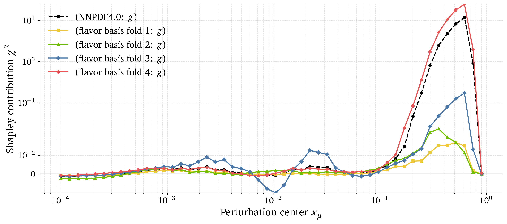
Shapley values give a quantitative handle on fold homogeneity. Open the way for quantitative fold design.
Conclusion
Exact, correlation-aware Shapley values open up the NNPDF black box, no feature-independence approximation.
- Rank each dataset's impact → optimize data selection and \(K\)-fold design.
- Diagnose uncertainties from the replica spread of \(\phi\).
- Model-agnostic → transferable to any black-box pipeline.
Mechanistic Interpretability for a Neutrino Foundation Model
Raphaël Bonnet-Guerrini1, Johann Ioannou-Nikolaides2, Troels Petersen2, Vincenzo Piuri 1, Jean-Loup Tastet2 and Inar Timiryasov21Computer Science Department, University of Milan; 2Physics Department, Københavns Universitet, Denmark
Foundation models
Large models, trained once, adapted to many downstream tasks.
Two key ingredients:
- Self-attention (Transformer architecture).
- Self-Supervised Learning on large data volumes.
Foundation model in Neutrino Physics
Detectors record pulses — light from a neutrino interaction, tracking its time, direction and energy.
PolarBERT: a foundation model trained on 131M Monte Carlo events.
Downstream → energy / direction reconstruction.
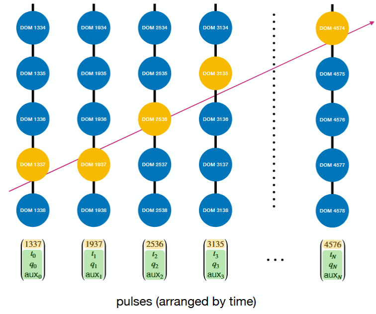
Interpretability at the era of Foundation Models
Foundation Model are able to generalize.
Mechanistic Interpretability asks: ⇨ How did my model solve this general class of problems?
One of the methodological approaches is to reverse engineer the model, identifying what is the function of each part.
Natural decomposition (Neurons, Layers, Attention heads) fails because of polysemanticity caused by superposition (#feature>#neurons).
Sparse representations and Latent Spaces
Polysemanticity is caused by overlapping directions in the activation space. Dimensionality reduction techniques may not be able to disentangle the features.
To overcome this we can use Sparse Dictionary Learning (SDL) to find a sparse representation of the latent space.
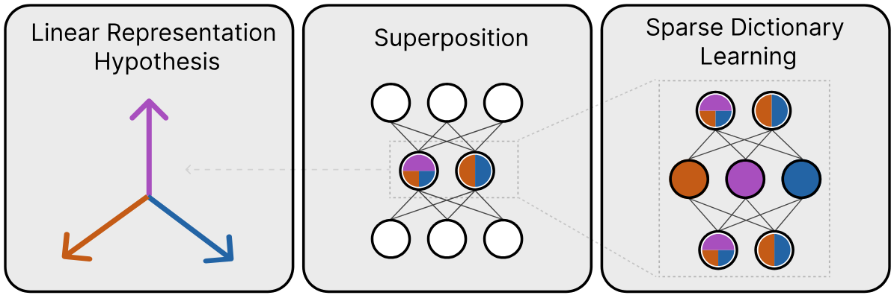
This allows the identification of behavior in the sparse latent space, providing insight on the network comprehension of underlying physics.
Step 1 — Where to look inside PolarBERT?
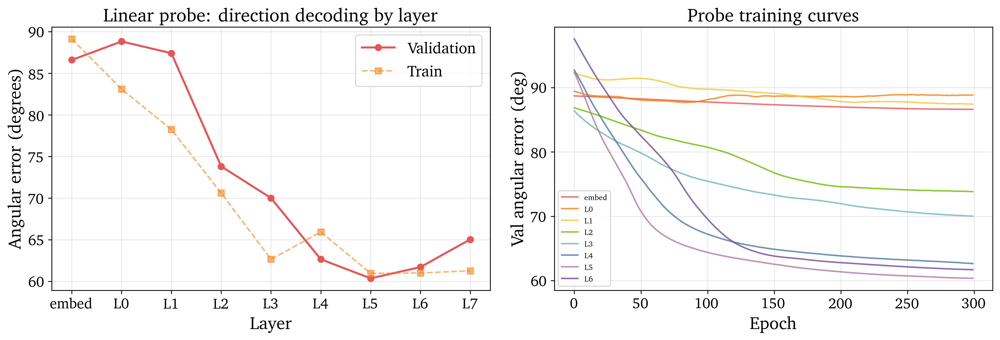
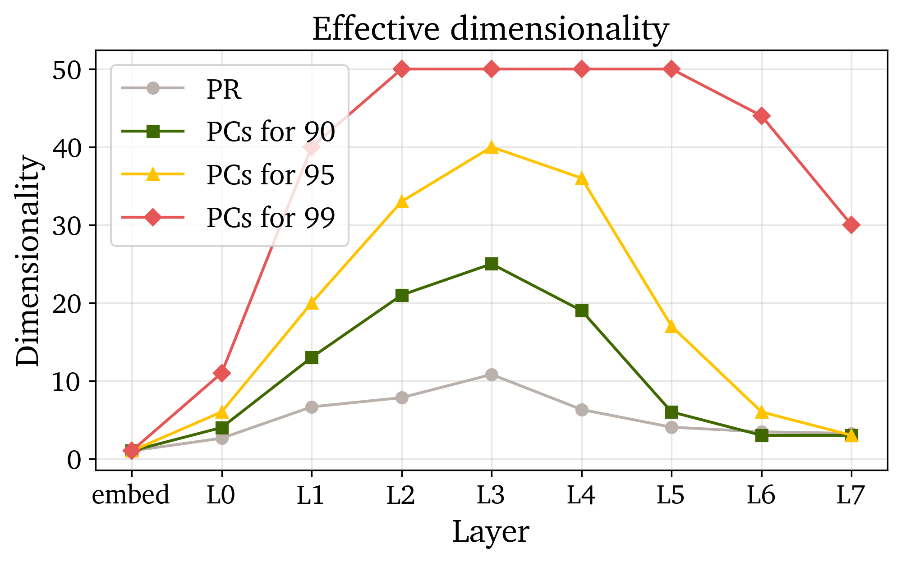
- Linear probes: directional info becomes accessible around layer 3.
- PCA: representation lives on a low-dimensional manifold (bell-shaped across depth).
- We train the SAE on the final-layer
CLS— the vector the prediction head reads.
Step 2 — Training the Sparse Autoencoder
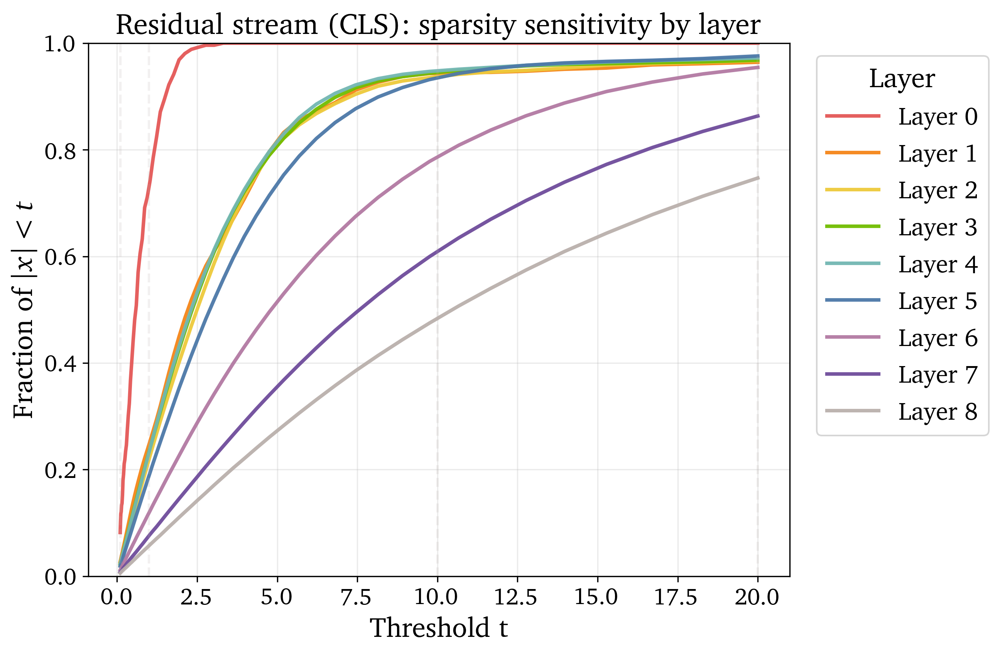
The model is natively dense → we enforce hard sparsity with BatchTopK.
Selected architecture (concept-independent sweep):
- 1024 latents (×4 expansion), TopK budget \(k=16\)
- Reconstruction \(R^2 = 0.994\)
- Directional fidelity \(= 0.989\)
- 0 dead latents, ~315 active features
Step 3 — What do the features encode?
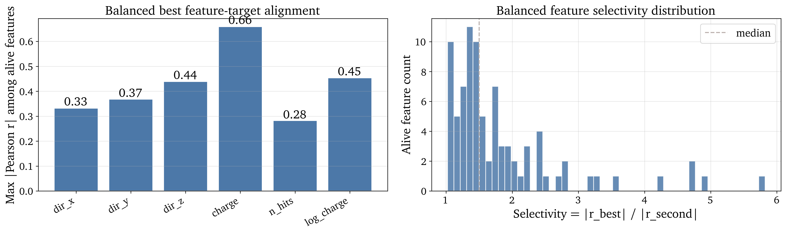
Validating latents on held-out events (AUROC, nuisance matching, causal ablation):
- Latent 640 → bright, clean events (AUROC 0.91).
- Latent 195 → auxiliary-rich, dim events (AUROC 0.84).
- The SAE exposes a readable event-quality / charge axis.
Takeaway & next steps
Representation \(\neq\) causation: features that read out a concept are not necessarily the ones the head uses.
- SAE recovers mixed detector-physics variables (brightness, auxiliary noise, multiplicity).
- Causal use of direction appears distributed, not localized in one latent.
- Next: cleaner physics concepts — zenith geometry, flavor / track topology.
Courses — 12 CFU + 56 h
PhD courses (CFU)
| Quantum Computing & Cryptography | 2 |
| Optimized AI in Edge Computing & IoT | 2 |
| ML Methods in HEP and Beyond | 3 |
| AIPHY Summer School | 6 |
Soft-skills (h)
| Open science: predatory journals / peer review | 5 |
| Open science: FAIR data | 4 |
| Research Integrity in Practice | 4 |
| Fundamentals of Academic Writing | 4 |
| Introduction to Open Science — Part 1 | 4 |
| Academic Writing: Research paper | 4 |
| Language coaching – Interpersonal Skill | 4 |
| Research evaluation | 2 |
| Purpose of a PhD in the knowledge economy | 2 |
| Behind the scenes of a peer-reviewed journal | 3 |
| Intellectual property & patent protection | 3 |
| Exploitation: spin-off & entrepreneurship | 4 |
| The art of Grantmanship | 4 |
| Sustainability for Global Health | 5 |
| Teaching and learning | 4 |
Publications
| Status | Work | Venue |
|---|---|---|
| Pre-print | AI/ML for Rubin LSST DESC (white paper) - 2 citations | |
| Under review | UQ for weakly-supervised Real/Bogus | A&A |
| Under review | Shapley values meet NNPDF | EPJ-C |
| Under review | MultiCWoLa | NeurIPS 2026 main track + ML&Physical Sciences workshop |
- Mechanistic interpretability (neutrino foundation models) -- Sci-Post physics and ML&Physical Sciences workshop
- BNN loss-landscape geometry -- ICLR/ICML
- Flows for correlated Shapley values (jet tagging) -- Sci-Post physics
- BNN for PDF, Application of MultiCWoLa for Real/Bogus, application of MultiCWoLa HEP, application of MultiCWoLa for Supernovae classification.
Talks & conferences
Presented
- 02/26 — AIPHY midterm, U. Geneva
- 04/26 — LSST ML Reliability (online)
- 04/26 — IRN Terascale, IJCLab Paris
- 06/26 — ETIC-AI 4EU+, SCAI Paris
Upcoming
- 08/26 — EuCAIFConf, Heidelberg
- 09/26 — ML4JET, Vienna
- 12/26 — NeurIPS, Sydney
Secondments (MSCA)
- Copenhagen, Niels Bohr Inst. — 04–07/2026 (ongoing)
- Geneva, Univ. of Geneva — planned
+ 14 visits / schools since 2024 (DN MSCA Horizon TMA AIPHY).
Thank you !
Backup Slides
Asymmetrical Co-Teaching

Calibration Metrics
- Negative Log-Likelihood (NLL): quality of probabilistic predictions.
- Brier Score: MSE of probabilistic predictions.
- Expected Calibration Error (ECE): difference between predicted probabilities and observed frequencies.
Shapley Values Pseudo code
# INPUT: observables, mu,sigma,amplitude, n_samples, n_flavors = n
# OUTPUT: shapley_vals[], baseline_chi2, cache
baseline_chi2 = evaluate_chi2(observables, flavor_subset=[]) # v({})
cache = {} # map subset -> v(S)
all_subsets = power_set(0..n-1) # exclude full-set if desired
for i in 0..n-1:
SV = 0
for S in all_subsets:
if i in S: continue
# v(S)
if S not in cache:
cache[S] = evaluate_chi2(observables, flavor_subset=list(S), mu,sigma,amplitude, n_samples)
vS = cache[S]
# v(S ∪ {i})
S_with = S ∪ {i}
if S_with not in cache:
cache[S_with] = evaluate_chi2(observables, flavor_subset=list(S_with), mu,sigma,amplitude, n_samples)
vSw = cache[S_with]
Δ = vSw - vS # marginal contribution
s = |S|
w = factorial(s) * factorial(n - s - 1) / factorial(n)
SV += w * Δ
shapley_vals[i] = SV
# RETURN: shapley_vals, baseline_chi2, evaluated_coalitions=|cache|
# COMPLEXITY: time ~ O(n · 2^n · cost_eval), space ~ O(2^n) (memoized)
Shapley Values weight
In game theory, Shapley Values represent the contribution \(\phi_i\) of a player \(i\) within a coalition \(S\) by comparing the outcomes of scenarios where the player is present \(v(S \cup \{i\})\) versus absent \(v(S)\). \[ \phi_i = \sum_{S \subseteq N \setminus \{i\}} \text{w}(S) \left[ v(S \cup \{i\}) - v(S) \right] \label{eq:comb_SV} \] With: \[ w(S) = \frac{|S|! \, (|N| - |S| - 1)!}{|N|!} \] \(w(S)\) weights for the importance of the coalition \(S\) being tested. It is the probability that the set of players who come after \(i\) is exactly \(S\).- \(|S|!\) is the number of ways to order the predecessors of \(i\)
- \((|N| - |S| - 1)!\) is the number of way to order the players after \(i\)
- \(|N|!\) is the number of way to order all players